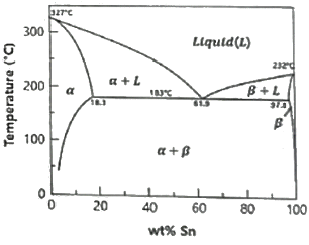

침투비파괴검사기사 (2020-08-22 기출문제)
1과목: 비파괴검사 개론
1. 와전류탐상시험의 장점에 대한 설명으로 옳은 것은?
- 비금속에 적용이 용이하다.
- 시험속도가 빠르며 자동화가 가능하다.
- 결합의 종류 판별 및 내부결함검사가 용이하다.
- 복잡한 형상을 갖는 시험체의 전면 탐상에 유리하다.
(정답률: 79%)

2. 엑스선발생장치와 감마선조사장치의 공통점이 아닌 것은?
- 자외선보다 과장이 짧은 광자를 방출한다.
- 전원이 필요하다.
- 원자번호가 높은 물질로 차폐한다.
- 발생된 방사선강도는 거리제곱에 반비례한다.
(정답률: 64%)
3. 다음 중 생성중인 결함(성장하고 있는 결함)을 검출하기에 적당한 비파괴시험은?
- 음향방출시험
- 방사선투과시험
- 자분탐상시험
- 기포누설시험
(정답률: 63%)
4. 다음 중 보수검사 시 자분탐상시험의 대상이 되는 결함이 아닌 것은?
- 응력부식 균열
- 언더컷 저부에 발생한 균열
- 필렛 용접부의 피로 균열
- 크리프(Creep) 균열
(정답률: 68%)
5. 강에서의 음속 5900m/s. 밀도 7.8g/cm3 일 때 임피던스는?
- 4.6×105g/cm2ㆍs
- 7.5×105g/cm2ㆍs
- 4.6×106g/cm2ㆍs
- 7.5×106g/cm2ㆍs
(정답률: 51%)
6. 다음 중 경질 및 고융점의 비금속 내화재와 융점이 낮은 금속을 소결시킨 복합재는?
- 서멧
- 인바
- 퍼멀로이
- 플래티나이트
(정답률: 72%)
7. 냉간 가공으로 인해 금속결정 내부에 전위와 같은 결함이 증가함으로서 변화하는 성질이 아닌 것은?
- 가공하면 전위의 집적에 의하여 경화한다.
- 냉간 가공으로 인해 금속 결정의 경도는 증가한다.
- 가공경화에 의해 변태강도는 감소하나, 연신은 증가한다.
- 가공으로 금속 내에 공격자점이 증가하면 전기저항이 증가한다.
(정답률: 64%)
8. Fe-Fe3C 상태도에 대한 설명으로 옳은 것은?
- A2는 시멘타이트의 자기변태점이며, 약 210°C이다.
- 공정점의 탄소량은 약 4.3%이다.
- 순철의 A3 변태점은 δ ↔ γ 이며, 약 1490°C이다.
- Ao는 철의 자기변태점이며, 약 768 °C이다.
(정답률: 50%)
9. 다음 Pb-Sn 합금 상태도에 대한 설명으로 틀린 것은?

- 공정반응이 일어난다.
- α상과 (α+L) 상 사이의 경계선을 고상선이라 한다.
- L상과 (α+L) 상 사이의 경계선을 액상선이라 한다.
- 아공정합금을 실온까지 서냉하면 α상과 β상은 층상구조만으로 이루어진다.
(정답률: 57%)
10. 다음 중 저온과 고압에 사용되는 금속재료가 구비해야 할 조건과 가장 거리가 먼 것은?
- 용접성이 좋을 것
- 항복점이 낮을 것
- 가공성이 좋을 것
- 내충격성이 좋을 것
(정답률: 86%)
11. 다음 알루미늄 합금에서 개량처리의 효과가 기대되는 실루민의 계로 옳은 것은?
- Al-Co계
- Al-Si계
- Al-Sn계
- Al-Zn계
(정답률: 82%)
12. 양백의 특징에 대한 설명으로 틀린 것은?
- 양은 또는 백동이라고도 불린다.
- 성분이 10~20%Ni, 15~30 %Zn, Cu인 합금이다.
- Sn을 넣으면 강도를 저하시키고 Pb는 편석을 초래한다.
- 전기 저항이 크기 때문에 일반 전기저항체로 사용 가능하다.
(정답률: 52%)
13. 파괴를 일으키는 응력보다 훨씬 낮은 응력에서 반복하여 하중을 가하면 결국 재료가 파괴되는 현상은?
- 피로 현상
- 에릭센 현상
- 항복 응력 현상
- 크리프 한도 현상
(정답률: 72%)
14. 켈멧(kelmet)에 대한 설명으로 옳은 것은?
- Cu-Si계 합금으로 장식용으로 사용한다.
- Cu-Al계 합금으로 내마모성이 우수하다.
- Cu-Zn계 합금으로 볼트, 너트의 재료이다.
- Cu-Pb계 합금으로 베어링용으로 사용한다.
(정답률: 53%)
15. 재료에 일정한 하중을 가하고 고온에서 긴 시간 동안에 변형량을 측정하는 시험은?
- 피로 시험
- 전단 시험
- 인장 시험
- 크리프 시험
(정답률: 78%)
16. 다음 용접 변형 중 면내 변형이 아닌 것은?
- 각 변형
- 가로 수축
- 세로 수축
- 회전 변형
(정답률: 67%)
17. 용접 후 용접변형에 대한 교정방법이 아닌 것은?
- 전진법
- 롤러에 의한 법
- 가열 후 해머질하는 법
- 얇은 판에 대한 점 수축법
(정답률: 58%)
18. 아크용집 작업에서 아크 발생시간이 7분, 아크 중지(휴식)시간이 3분이라 할 때 용접기 사용률은 몇 % 인가?
- 30
- 50
- 70
- 90
(정답률: 79%)
19. 다음 중 압점에 해당하는 용접방식은?
- 초음파 용접
- 스터드 용접
- 전자빔 용접
- 피복 아크 용접
(정답률: 49%)
20. 연강용 피복 아크 용접봉의 종류에서 피복제의 계통이 고산화티탄계인 것은?
- E 4301
- E 4311
- E 4313
- E 4316
(정답률: 50%)
2과목: 침투탐상검사 원리
21. 침투제의 물리, 화학적 특성을 설명한 것으로 옳은 것은?
- 침투제는 매우 빨리 건조되어야 한다.
- 침투제는 쉽게 제거되어서는 안된다.
- 침투제는 점성이 높아야 한다.
- 침투제는 적심성이 우수해야 한다.
(정답률: 68%)
22. 다음 중 유화제의 역할은?
- 시험표면의 전처리에 이용되며 사용 시 신속한 세척이 이루어진다.
- 침투제의 침투효과와 적심 효과를 돕는 작용이 있다.
- 침투제와 작용하여 물로 쉽게 씻을 수 있도록 작용을 한다.
- 현상제의 일종으로 침투액을 쉽게 빨아 올림은 물론 시험 표면에 고른 분사를 위해 사용된다.
(정답률: 73%)
23. 사용중인 침투제의 성능점검을 1차적으로 간단히 할 수 있는 시험방법은?
- 침투액의 비중을 측정하여 점검한다.
- 침투액의 점성을 측정하여 점검한다.
- 대비시험편을 사용하여 비교시험한다.
- 메니커스(Menicus) 시험으로 점검한다.
(정답률: 75%)
24. 용제제거성 염색침투액을 적용한 침투탐상시험으로 가장 쉽게 검출할 수 있는 균열은?
- 피로균열
- 입계균열
- 응력부식균열
- 구조물의 용접균열
(정답률: 75%)
25. 관찰을 위한 시험조건으로 거리가 가장 먼 것은?
- 시험면의 밝기
- 주변의 밝기
- 눈과 관찰부위와의 각도
- 광원의 밝기
(정답률: 50%)
26. 침투탐상검사에서 표면장력은 어떤 물질에서 일어나는 고유현상인가?
- 기체
- 액체
- 고체
- 진공
(정답률: 82%)
27. 침부제의 침투성을 보조하기 위해서 통상적으로 사용하는 효율적인 방법은?
- 침투제를 가열한다.
- 진공을 만들어 압력을 올려준다.
- 시험체에 진동을 준다.
- 초음파 펌핑을 한다.
(정답률: 74%)
28. 형광 침투탐상시험법에서 지시의 색은?
- 하얀색의 바탕색에 대해 강한 황녹색의 빛으로 나타난다.
- 녹색의 바탕색에 대해 연한 하얀색의 빛으로 나타난다.
- 자외선 배경에 대해 강한 황녹색의 빛으로 나타난다.
- 붉은색의 바탕색에 대해 강한 황녹색의 빛으로 나타난다.
(정답률: 79%)
29. 다음의 침투탐상시험 방법 중 미세한 결함에 대한 감도가 가장 우수한 것은?
- 용제제거성 염색 침투탐상시험
- 후유화성 염색 침투탐상시험
- 용제제거성 형광 침투탐상시험
- 후유화성 힝광 침투탐상시험
(정답률: 57%)
30. 고온에서 오랜 시간 건조하면 나타나는 현상으로 틀린 것은?
- 침투액의 형광휘도나 색채가 열화 된다.
- 길함내의 침투액을 증발 건조시킨다.
- 지시모양의 식별성을 저하시킨다.
- 결함의 검출능력을 저하시키지 않는다.
(정답률: 78%)
31. 침투탐상시험에서 결함 검출도의 신뢰성에 영향을 미치는 요인을 직접적 요인과 간접적 요인으로 나눌 때 간접적인 요인인 것은?
- 검사 속도
- 검출할 결함의 종류
- 검출할 결함의 크기
- 검사할 부재의 크기
(정답률: 54%)
32. 습쉬 현상제를 수세성 침투액과 조합하여 사용하는 침투 탐상시험법에서의 특징이 아닌 것은?
- 많은 양의 시험품 탐상에 적합
- 비 자성재료도 시험가능
- 결함 지시모양은 시간 경과에 무관
- 현상제는 물에 분산시켜 사용
(정답률: 76%)
33. 침투액의 점성이 탐상에 미치는 영향에 대한 설명으로 옳은 것은?
- 침투액의 점성은 침투속도와 침투력에 큰 영향을 미치지 않는다.
- 침투액의 점성은 침투속도에는 영향을 미치지만 침투력에는 큰 영향을 미치지 않는다.
- 침투액의 점성은 침투력에는 영향을 미치지만 침투속도에는 큰 영향을 미치지 않는다.
- 침투액의 점성은 침투속도와 침투력 모두에 큰 영향을 미친다.
(정답률: 45%)
34. 침투상상검사에서 사용하는 현상제의 특성 중 설명이 잘못된 것은?
- 분산성이 좋아야 한다.
- 침투액의 흡출성이 좋아야 한다.
- 중성으로 시험체에 대해 부식성이 없어야 한다.
- 실제 결함의 크기보다 침투지시의 모양이 확대되면 안 된다.
(정답률: 59%)
35. 점성의 변수에 영향을 받는 동적침투인자(KPP)를 나타내는 식으로 옳은 것은? (단, γ: 표면장력, θ: 접촉각, η: 점성을 나타낸다.)
- KPP = (γㆍη)/cosθ
- KPP = (γㆍcosθ)/η
- KPP = (ηㆍcosθ)/γ
- KPP = γㆍηㆍcosθ
(정답률: 54%)
36. 액체가 들어 있는 통속에 양끝이 막혀있지 않은 가는 유리관을 세웠을 때에 유리관속의 액체 면이 관 밖의 액체 면보다 높아지거나 낮아지는 모세관 현상의 설명으로 올바른 것은?
- 액체의 응집력과 유리관과 액체 사이의 부착력의 차이로 일어남
- 액체의 점성력과 유리관과 액체 사이의 부력으로 일어남
- 액체의 적심성과 유리관과 액체 사이의 흡입력으로 일어남
- 유리관속의 액체 표면적을 크게 하려는 표면장력으로 액체를 끌어내리기 때문임
(정답률: 42%)
37. 후유화성 침투액을 세척처리할 때의 설명으로 옳지 않은 것은?
- 분무법으로 침투액을 제거한다.
- 물에 적신 헝겊을 사용해서 침투액을 제거한다.
- 세척을 시작한 후 중단하지 않고 단시간에 신속하게 제거한다.
- 형광 침투액의 경우 자외선을 조사시켜 세척 정도를 확인하며 제거한다.
(정답률: 42%)
38. 수세성 침투액을 사용하는 방법에서 검사 감도를 높이기 위해서 다음 증 침투시간을 가장 길게 해야 하는 경우는?
- 알루미늄 용접부
- 마그네슘 용접부
- 알루미늄 압연품
- 강 용접부
(정답률: 68%)
39. 침투탐상검사 시 균열의 깊이와 가장 밀접한 관계가 있는 것은?
- 침투시간
- 현상시간
- 현상제 도막의 두께
- 형광 또는 색채의 폭이나 휘도
(정답률: 29%)
40. 균열 검출에 사용되는 두 종류의 침투제에서 감도를 비교하는 방법으로 올바른 것은?
- 비중을 측정하기 위해 비중계를 사용한다.
- 균열이 존재하는 알루미늄 시편을 사용한다.
- 접촉각을 측정한다.
- 표면 장력을 측정한다.
(정답률: 65%)
3과목: 침투탐상검사 시험
41. 침투탐상검사 방법을 선정할 때 고려하지 않아도 되는 것은?
- 시험체의 재질
- 시험체의 두께
- 탐상면의 거칠기
- 작업성 및 경제성
(정답률: 63%)
42. 침투탐상검사에서 시험체 표면에 둥근 시 시모양이 발생하는 원인은?
- 가공(gas holes)
- 핫티어(hot tear)
- 단조 겹침(forging laps)
- 피로 균열(fatigue crack)
(정답률: 65%)
43. 사용 중인 수세성 침투액의 기능이 저하될 수 있는 가장 큰 원인은?
- 일부성분의 증발
- 물에 의한 오염
- 자연발화
- 검사품과의 화학반응
(정답률: 76%)
44. 침투탐상검사에 이용되는 현상법에 대한 설명 중 옳은 것은?
- 건식법은 주로 후유화성 염색침투탐상과 조합하여 사용한다.
- 습식현상법은 시간이 경과해도 결함지시의 크기와 모양이 변하지 않는다.
- 속건식현상법에서는 분사노즐을 시험면에서 대략 10cm 이내로 하여 분사해야 균일하게 도포할 수 있다.
- 무현상법은 고감도 수세성 형광침투탐상에서 사용하며, 다른 현상법에 비해 결함검출도가 떨어진다.
(정답률: 53%)
45. 침투탐상검사에 사용되는 기기 중 가시광선의 밝기를 측정하는 것은?
- 조도계
- 자외선 강도계
- UV Meter
- 서베이메타
(정답률: 65%)
46. 나사홈과 같은 형상이 복잡한 시험체를 검사할 때 가장 적합한 침투탐상검사법은?
- 용제제거성 형광침투법
- 용제제거성 염색침투법
- 수세성 형광침투법
- 후유화성 염색침투법
(정답률: 52%)
47. 침투탐상검사에서 휘발성이 높은 유기용제에 백색의 미세분말을 분산시킨 현상제를 적용하는 현상법은?
- 건식 현상법
- 습식 현상법
- 특수 현상법
- 속건식 현상법
(정답률: 59%)
48. 물베이스 유화제의 농도를 측정하는 기기는?
- 굴절계
- 점도계
- 조도계
- 자외선강도계
(정답률: 41%)
49. 도자기 등과 같은 다공성 재질의 시험체에 100㎛ 정도의 균열까지 검사할 수 있는 침투탐상검사법은?
- 입자 여과법
- 정전기 침투탐상검사법
- 하전 입자법
- 휘발성 침투액 이용법
(정답률: 54%)
50. 서로 다른 두 종류의 침투제에 대한 균열검출능력을 비교하기 위해 사용하는 방법은?
- 접촉각을 측정하여 비교한다.
- 비중계를 사용하여 비중을 측정하여 비교한다.
- 점도계를 사용하여 점성을 측정하여 비교한다.
- 균열이 있는 침투탐상용 대비시험편으로 시험하여 비교한다.
(정답률: 79%)
51. 매우 지저분하고 표면에 그리스가 묻어 있는 부품의 표면처리에는 물을 주원료로 제조된 화학약품의 세척제가 사용되는데, 이 후 반드시 조치해야 할 후속조치로 옳은 것은?
- 용제 세척제로 다시 한 번 세척해야 한다.
- 표면에는 어떠한 잔류물도 남아 있지 않도록 완전히 세정해야 한다.
- 표면 개구부에 청정제가 들어 있지 못하도록 열을 가하여 제거시킨다.
- 휘발성 용제 세척제로 다시 한 번 세척해야 한다.
(정답률: 64%)
52. 형광침투탐상검사의 자외선등에서 발생되는 파장 중 인체에 가장 해로운 것은?
- 300 nm
- 340 nm
- 360 nm
- 380 nm
(정답률: 53%)
53. 시간이 경과하여도 비교적 실제 결함형태와 비슷한 침투지시모양을 얻고자 할 때 가장 적합한 현상방법은?
- 무현상법
- 습식 현상법
- 건식 현상법
- 속건식 현상법
(정답률: 46%)
54. 후유화성 침투탐상검사에서 물베이스 유화제에 혼합되는 계면활성제의 농도로 읊은 것은?
- 35% 이하
- 40% 이하
- 45% 이하
- 50% 이하
(정답률: 59%)
55. 침투탑상검사에서 일반적으로 현상제에 요구되는 성질이 아닌 것은?
- 침투액의 흡출능력이 강한 미세분말이어야 한다.
- 분산성이 좋아야 한다.
- 건식 현상제는 투명도가 없어야 한다.
- 독성이 적어야 한다.
(정답률: 52%)
56. 침투탐상검사에서 침투능력에 대한 설명으로 잘못된 것은?
- 시험체의 온도가 낮을수록 침투시간이 길어진다.
- 결함의 종류에 따라 침투능력이 다르다.
- 전처리 시 사용된 세척액은 결함 내에 남아있어야 침투액과 혼합되어 성능이 좋아진다.
- 전처리 시 오염 등이 제거되어야 침투액의 성능이 높아질 수 있다.
(정답률: 80%)
57. 정전기 현상을 이용하여 비전도성 재료의 표면에 존재하는 미세결함을 검출하는 침투탐상검사법은?
- 입자여과법
- 하전입자법
- 후유화성 형광침투법
- 휘발성 침투액 이용법
(정답률: 75%)
58. 침투탐상검사에 사용되는 전처리 방법 중 기계적 처리 방법이 아닌 것은?
- 증기탈지
- 스크레이핑
- 샌딩
- 연삭
(정답률: 75%)
59. 침투탐상검사를 수행할 때 관찰되는 지시모양 중 의사 지시모양이 아닌 것은?
- 작업자의 손자국에 의한 지시모양
- 오염에 의한 지시모양
- 다른 시험체와 접촉에 의한 지시모양
- 단면변화부에 발생하는 지시모앙
(정답률: 72%)
60. 알칼리성 세척제로 가장 잘 제거되는 오염물은?
- 물
- 기름
- 그리이스
- 녹이나 스케일
(정답률: 50%)
4과목: 침투탐상검사 규격
61. 보일러 및 압력용기에 대한 침투탐상검사(ASME Sec.V Art.6)의 현상에 대한 내용이 틀린 것은?
- 현상제는 침투액을 제거한 후 가능한 바로 적용한다.
- 염색 침투액은 습식현상제만을 사용해야 한다.
- 형광 침투액은 건식현상제만을 사용해야 한다.
- 현상제의 피막 두께가 두꺼우면 지시를 가릴 수 있다.
(정답률: 36%)
62. 침투탑상시험 방법 및 침투지시모양의 분류(KS B 0816)에서 규정된 A형 대비시험편의 중앙부 인공흠의 깊이는?
- 10mm
- 1.5mm
- 2.0mm
- 2.5mm
(정답률: 60%)
63. 보일러 및 압력용기에 대한 표준침투탐상검사(ASME Sec.V Art.24 SD-808)에서 신제품 및 기사용한 석유제품에 있는 염소에 대한 표준시험방법에서 시료의 염소 함유량 계산방법은? (단, P = 시료로부터 얻은 염화은의 무게[g], B= 블랭크으로부터 얻은 염화은의 무게[g], W = 사용된 시료의 무게[g] 이다.)
- 염소[중량%] = {(P-B)22.74}/W
- 염소[중량%] = {(B-P)22.74}/W
- 염소[중량%] = {(P-B)24.74}/W
- 염소[중량%] = {(B-P)24.74}/W
(정답률: 51%)
64. 침투탐상시험 방법 및 침투지시모양의 분류(KS B 0816)에 따른 탐상시험에서 세척처리에 스프레이 노즐을 사용할 때 특별한 규정이 없는 한 최대 수압은 약 얼마인가?
- 200 kPa
- 225 kPa
- 250 kPa
- 275 kPa
(정답률: 70%)
65. 보일러 및 압력용기에 대한 침투탐상검사(ASME Sec.V Art6)에서 최종판독에 대한 설명이다. 틀린 것은?
- 습식현상제는 현상제 피막이 건조된 직후부터 10~60분 사이에 실시한다.
- 건식현상제는 현상제를 적용한 직후에 10~60분 사이에 실시한다.
- 지시모양이 번짐으로 인하여 검사결과가 변하지 않는다면 60분 이상 시간이 경과하여 관찰해도 된다.
- 속건식현상제는 현상시간에 관계없이 관찰하여도 무방하다.
(정답률: 56%)
66. 침투탐상시험 방법 및 침투지시모양의 분류(KS B 0816)에서 형광 침투탐상시험 시 어두운 곳에서 검사를 할 때 자외선 조사등에 눈이 익숙해지도록 기다려야 하는 최소 시간은?
- 1분
- 3분
- 5분
- 10분
(정답률: 66%)
67. 침투탐상시험 방법 및 침투지시모양의 분류(KS B 0816)에서 B형 대비시험편 제작에 사용되는 도금 재료는?
- 니켈 및 크롬
- 아연 및 니켈
- 크롬 및 구리
- 구리 및 니켈
(정답률: 48%)
68. 침투탐상시험 방법 및 침투지시모양의 분류(KS B 0816)에서 후유화성 형광침투 건식현상제의 시험순서가 맞는 것은?
- 전처리 - 침투제 적용 - 유화제 적용 - 유기용제 세척처리 - 현상제 적용 - 관찰 - 후처리
- 전처리 - 침투제 적용 - 물 세척처리 - 건조 - 현상제 적용 - 관찰 - 후처리
- 전처리 - 침투제 적용 - 유화제 적용 - 물 세척처리 - 건조 - 현상제 적용 - 관찰 - 후처리
- 전처리 - 침투제 적용 - 유기용제 세척처리 - 건조 - 현상제 적용 - 관찰 - 후처리
(정답률: 66%)
69. 보일러 및 압력용기에 대한 침투탐상검사(ASME Sec.V Art.6)에 따라 절차서를 작성할 때 최대 적용시간을 고려할 필요가 없는 것은?
- 전처리 후 건조시간
- 침투시간
- 현상시간
- 평가시간
(정답률: 46%)
70. 침투탐상시험 방법 및 침투지시모양의 분류(KS B 0816)에 따르면 염색 침투액을 사용할 때 적용 할 수 있는 현상 방법은?
- 특수 현상법
- 건식 현상법
- 무 현상법
- 수용성 현상제를 사용하는 습식 현상법
(정답률: 35%)
71. 침투탐상 시험방법 및 침투지시모양의 분류(KS B 0816)에서 침투지시모양과 결함의 분류에 대한 설명으로 틀린 것은?
- 침투지시모양의 분류는 의사지시가 아닌지 확인하고나서 한다.
- 연속 침투지시 모양은 지시모양이 거의 동일 직선상에 나란히 존재하고 그 상호 거리가 3mm 이하인 것이다.
- 독립 결함은 갈라짐, 선상결함, 원형상결함의 3종류로 분류한다.
- 분산결함은 정해진 면적 안에 존재하는 결함으로 종류, 개수 또는 개개의 길이의 합계 값에 따라 평가한다.
(정답률: 68%)
72. 보일러 및 압력용기에 대한 침투탐상검사(ASME Sec.V Art.6)에 정한 시험체의 비표준온도에서는 어떤 조치를 하면 시험을 할 수 있는가? (단, 표준온도를 벗어 난 것을 비표준온도라고 한다.)
- 비교시험편에 의한 성능시험으로 입증
- 고성능 침투탐상제를 사용
- 침투제를 가열하여 사용
- 표준온도를 벗어나면 안된다.
(정답률: 50%)
73. 침투탐상 시험방법 및 침투지시모양의 분류(KS B 0816)에 규정된 B형 대비시험편의 기호와 그의 도금 갈라짐 나비 (목표 값)의 연결이 틀린 것은?
- PT-B50 : 2.5㎛
- PT-B30 : 2.0㎛
- PT-B20 : 1.0㎛
- PT-B10 : 0.5㎛
(정답률: 57%)
74. 침투탐상시험 방법 및 침투지시모양의 분류(KS B 0816)에 따라 침투탐상시험 시 검사체의 온도가 3~15℃ 범위에 있는 경우 침투시간은?
- 온도를 고려하여 침투시간을 늘린다.
- 온도를 고려하여 침투시간을 줄인다.
- 침두시간은 변하지 않는다.
- 표준침투시간으로 한다.
(정답률: 64%)
75. 압력용기 제작기준 규격 강제 부록(ASME Code Sev.Ⅷ)에서 침투탐상검사 후 합격에 해당되는 지시는?
- 1/4 inch 원형지시
- 1/4 inch 선형지시
- 1/8 inch 원형지시
- 1/8 inch 선형지시
(정답률: 43%)
76. 배관 용접부의 비파괴검사 방법(KS B 0888)에서 침투탐상시험에 대한 설명으로 옳은 것은?
- 시험의 실시범위는 원칙적으로 지그 부착 자국의 주변에서 그 외부로 5mm 의 길이를 더한 범위로 한다.
- 시험방법의 종류는 원칙적으로 용제제거성 형광침투탐상시험, 속건식 현상법으로 한다.
- 현상처리는 시험면의 표면이 전혀 보이지 않도록 균일하게 도포하여야 한다.
- 시험체에 침투액이 남아 제거가 필요한 경우 후처리는 물스프레이나 에어로 분무하여 처리한다.
(정답률: 33%)
77. 보일러 및 압력용기에 대한 침투탐상검사(ASME Sec.V Art.6)에 의한 습식현상제 중 수성현상제의 적용 방법이 아닌 것은?
- 솔질
- 담금
- 투척
- 분무
(정답률: 68%)
78. 침투탐상시험 방법 및 침투지시모양의 분류(KS B 0816)에 의한 탐상시험에서 침투장치, 유화장치, 세척장치, 암실, 자외선조사장치가 모두 필요한 시험 방법의 기호로 옳은 것은?
- FA-S
- FB-D
- FC-W
- VB-S
(정답률: 51%)
79. 침투탐상시험 방법 및 침두지시모양의 분류(KS B 0816)에 따라 침투지시모양의 관찰에 대한 설명으로 틀린 것은?
- 현상제 건조 후 하는 것이 바람직하다.
- 형광침투액을 사용한 경우 관찰 전 어두운 곳에서 눈을 적용시킨다.
- 형광침투액 사용 시 시험체 표면의 자외선강도가 800 ㎼/cm2 미만이어서는 안된다.
- 형광침투액을 사용한 경우 관찰면 밝기가 20 lx 이하여야 한다.
(정답률: 40%)
80. 보일러 및 압력용기에 대한 침투탐상검사(ASME Sec.V Art.6)에 따른 침투탐상검사에서 세척 후 검사 표면의 건조 방법 중 규정된 방법이 아닌 것은?
- 자연 건조
- 비가역 고온 가열 건조
- 강제 온풍 건조
- 강제 냉풍 건조
(정답률: 46%)